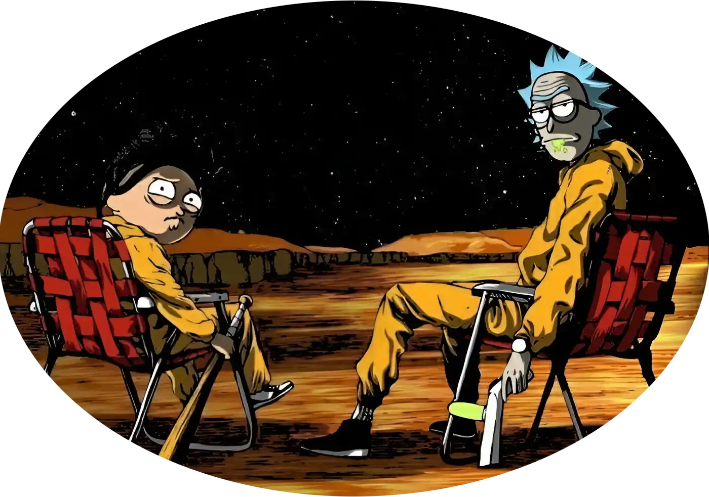

Suleymanov Bobur
📍Currently in: Tashkent, UZB

Hello everyone! Not an NPC!
I am Suleymanov Bobur, originating from the lively city of Ferghana in Uzbekistan.
A passion for learning first sparked through physics, mathematics, and computer science.
I'm driven to create the new, unite others around a shared purpose, and guide those seeking their path.
On this website, you'll find information about what I do, what I'm reading, and my thoughts and ideas. If our interests align, feel free to reach out—I'm always open to connecting and expanding my network.
*design inspired by ky.org